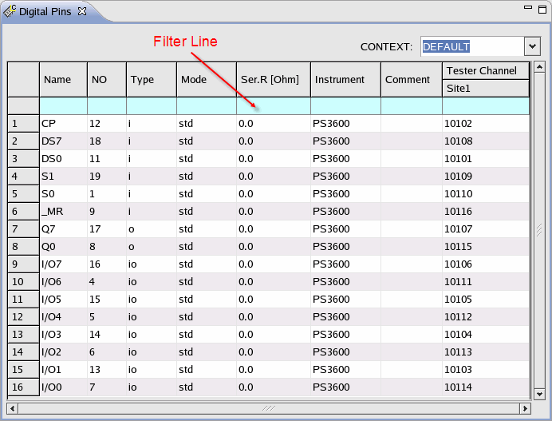
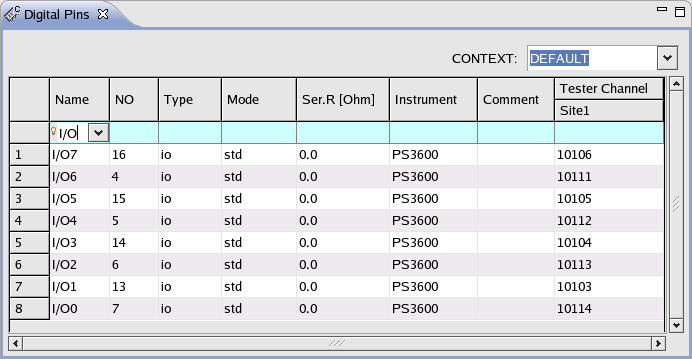

Filter line
The filter line is in the Pin Setting, Group, Port and Utility Purpose Editor.

Type any letters in the filter line, only the data including the letters will be shown.
Note Regular expression is supported.
Example
When you type I/O in the filter line of the Pin Name column, all the pins whose names include I/O are shown.

Functional changes
- Introduced before SmarTest 6.3.2